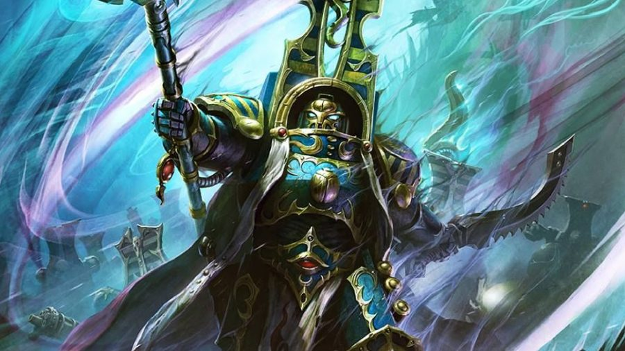
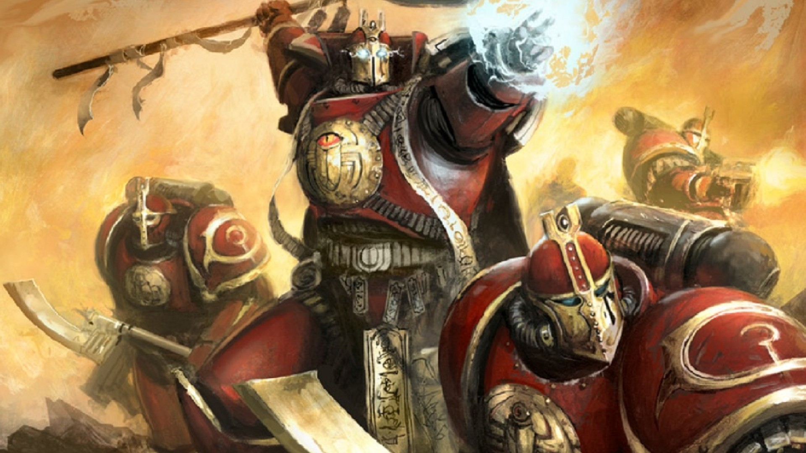

Library of Prospero (Librería de Próspero en español) es un sitio web dedicado a los "Thousand Sons" (Mil Hijos en español), una facción de la franquicia de "Warhammer". Este sitio tiene dos objetivos para cumplir. Primero, busca servir como una introducción a nuevas personas a la facción de los Mil Hijos, con material introductorio al tema (como su historia y datos interesantes), siendo accesible por la sección de Lore del sitio web. Segundo, es catalogar todas las figuras de acción manufacturadas por la compañía china "JoyToy" de los Mil Hijos. "JoyToy" ha formado una colaboración con "Games Workshop" (los dueños de Warhammer) para transformar las miniaturas del juego de mesa en figuras de gran detalle y articulación, los Mil Hijos siendo parte de las facciones que ya han sido transformadas. Este catálogo se puede acceder por medio de la sección del sitio web bajo el mismo nombre.

"Warhammer" es un universo repleto de conflicto y oscuridad, con los Mil Hijos sirviendo como un buen ejemplo de esto. Comenzando como grandes usuarios de magia, durante el curso del tiempo fueron lentamente afligidos por maldiciones y malas decisiones nacidas por buenas intenciones. Eventualmente, después de varias advertencias, usaron sus poderes después de ser prohibidos de hacerlo por el Imperio de la Humanidad y su planeta fue atacado por los "Space Wolves" (Lobos Espaciales en español) como consecuencia. Abandonaron al Imperio y se unieron a los poderes oscuros del Caos, sellando su destino. Ahora, son una facción rota en pedazos, la mayoría siendo transformados en arena atrapada en su armadura, por culpa de un hechizo que fue mal. Uno de sus miembros más importantes, "Ahriman" (quien es responsable por el hechizo), está tratando de encontrar una cura para sus hermanos, pero solo el tiempo dirá si logrará ser exitoso en su misión.
